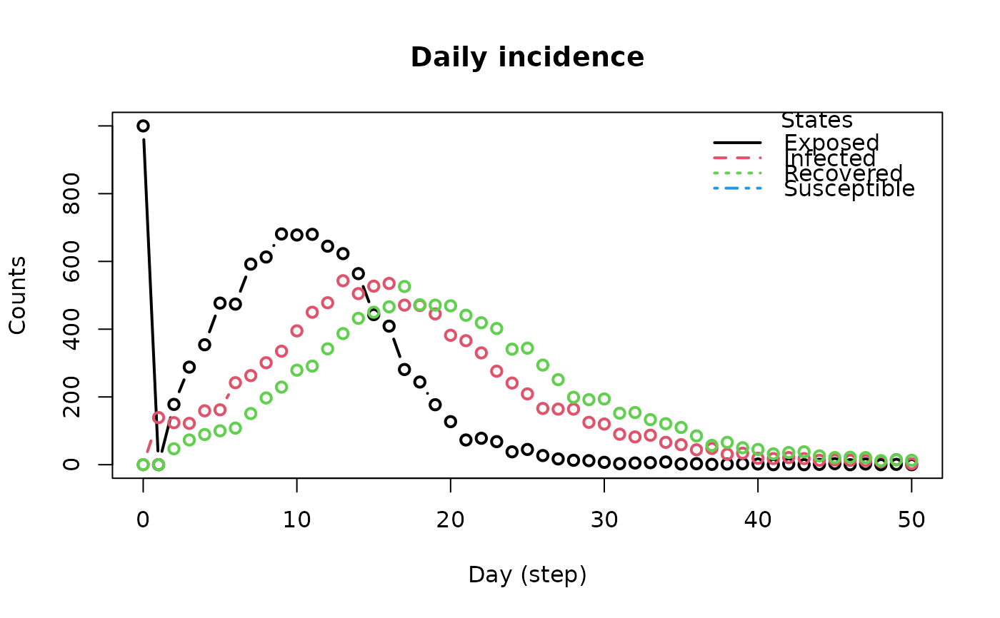
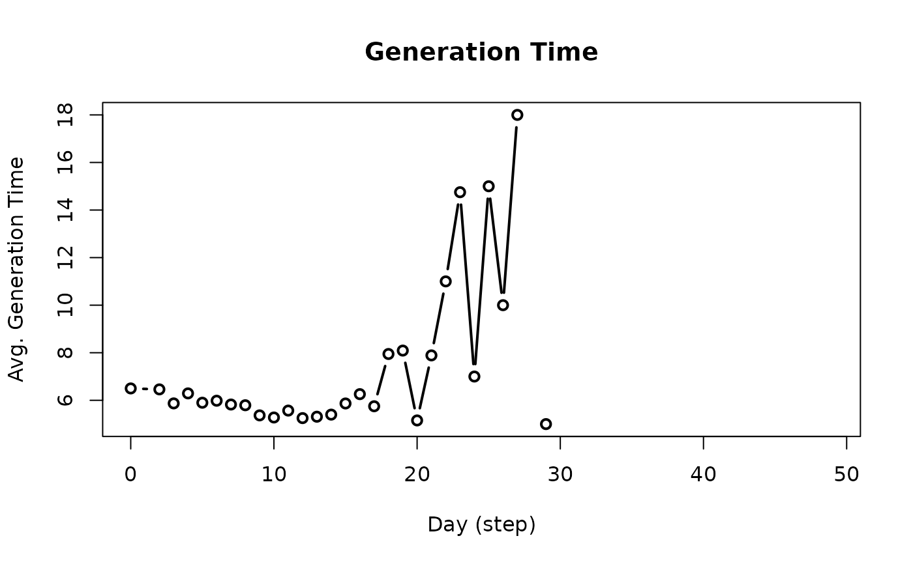

Models in epiworld are stored in a database. This database can be accessed
using the functions described in this manual page. Some elements of the
database are: the transition matrix, the incidence matrix, the reproductive
number, the generation time, and daily incidence at the virus and tool level.
Usage
get_hist_total(x)
get_today_total(x)
get_hist_virus(x)
get_hist_tool(x)
get_transition_probability(x)
get_reproductive_number(x)
# S3 method for class 'epiworld_repnum'
plot(
x,
y = NULL,
ylab = "Average Rep. Number",
xlab = "Day (step)",
main = "Reproductive Number",
type = "b",
plot = TRUE,
...
)
plot_reproductive_number(x, ...)
get_hist_transition_matrix(x, skip_zeros = FALSE)
# S3 method for class 'epiworld_hist_transition'
as.array(x, ...)
plot_incidence(x, ...)
# S3 method for class 'epiworld_hist_transition'
plot(
x,
type = "b",
xlab = "Day (step)",
ylab = "Counts",
main = "Daily incidence",
plot = TRUE,
...
)
get_transmissions(x)
get_generation_time(x)
# S3 method for class 'epiworld_generation_time'
plot(
x,
type = "b",
xlab = "Day (step)",
ylab = "Avg. Generation Time",
main = "Generation Time",
plot = TRUE,
...
)
plot_generation_time(x, ...)Arguments
- x
An object of class
epiworld_sir,epiworld_seir, etc. any model.- y
Ignored.
- ylab, xlab, main, type
Further parameters passed to
graphics::plot()- plot
Logical scalar. If
TRUE(default), the function will the desired statistic.- ...
In the case of plot methods, further arguments passed to graphics::plot.
- skip_zeros
Logical scalar. When
FALSEit will return all the entries in the transition matrix.
Value
The
get_hist_totalfunction returns an object of class epiworld_hist_total.
The
get_today_totalfunction returns a named vector with the total number of individuals in each state at the end of the simulation.
The
get_hist_virusfunction returns an object of class epiworld_hist_virus.
The
get_hist_toolfunction returns an object of epiworld_hist_virus.
The
get_transition_probabilityfunction returns an object of classmatrix.
The
get_reproductive_numberfunction returns an object of class epiworld_repnum.
The
plotfunction returns a plot of the reproductive number over time.
get_hist_transition_matrixreturns a data.frame with four columns: "state_from", "state_to", "date", and "counts."
The
as.arraymethod forepiworld_hist_transitionobjects turns thedata.framereturned byget_hist_transition_matrixinto an array ofnstates x nstates x (ndays + 1)entries, where the first entry is the initial state.
The
plot_incidencefunction returns a plot originating from the objectget_hist_transition_matrix.
The
plotfunction returns a plot which originates from theepiworld_hist_transitionobject.
The function
get_transmissionsreturns adata.framewith the following columns:date,source,target,virus_id,virus, andsource_exposure_date.
The function
get_generation_timereturns adata.framewith the following columns: "agent", "virus_id", "virus", "date", and "gentime".
The function
plot_generation_timeis a wrapper for plot and get_generation_time.
Details
The plot_reproductive_number function is a wrapper around
get_reproductive_number that plots the result.
The plot_incidence function is a wrapper between
get_hist_transition_matrix and it's plot method.
The plot method for the epiworld_hist_transition class plots the
daily incidence of each state. The function returns the data frame used for
plotting.
See also
Other Models:
ModelDiffNet(),
ModelSEIR(),
ModelSEIRCONN(),
ModelSEIRD(),
ModelSEIRDCONN(),
ModelSEIRMixing(),
ModelSIR(),
ModelSIRCONN(),
ModelSIRD(),
ModelSIRDCONN(),
ModelSIRLogit(),
ModelSIRMixing(),
ModelSIS(),
ModelSISD(),
ModelSURV()
Examples
# SEIR Connected
seirconn <- ModelSEIRCONN(
name = "Disease",
n = 10000,
prevalence = 0.1,
contact_rate = 2.0,
transmission_rate = 0.8,
incubation_days = 7.0,
recovery_rate = 0.3
)
# Running the simulation for 50 steps (days)
set.seed(937)
run(seirconn, 50)
#> _________________________________________________________________________
#> |Running the model...
#> |||||||||||||||||||||||||||||||||||||||||||||||||||||||||||||||||||||||| done.
#> | done.
# Retrieving the transition probability
get_transition_probability(seirconn)
#> Susceptible Exposed Infected Recovered
#> Susceptible 0.9028099 0.09719012 0.0000000 0.0000000
#> Exposed 0.0000000 0.85844742 0.1415526 0.0000000
#> Infected 0.0000000 0.00000000 0.7000978 0.2999022
#> Recovered 0.0000000 0.00000000 0.0000000 1.0000000
# Retrieving date, state, and counts dataframe including any added tools
get_hist_tool(seirconn)
#> [1] date tool_id tool state counts
#> <0 rows> (or 0-length row.names)
# Retrieving overall date, state, and counts dataframe
head(get_hist_total(seirconn))
#> date state counts
#> 1 0 Susceptible 9000
#> 2 0 Exposed 1000
#> 3 0 Infected 0
#> 4 0 Recovered 0
#> 5 1 Susceptible 9000
#> 6 1 Exposed 861
# Retrieving date, state, and counts dataframe by variant
head(get_hist_virus(seirconn))
#> date virus_id virus state counts
#> 1 0 0 Disease Susceptible 0
#> 2 0 0 Disease Exposed 1000
#> 3 0 0 Disease Infected 0
#> 4 0 0 Disease Recovered 0
#> 5 1 0 Disease Susceptible 0
#> 6 1 0 Disease Exposed 861
# Retrieving (and plotting) the reproductive number
rp <- get_reproductive_number(seirconn)
plot(rp) # Also equivalent to plot_reproductive_number(seirconn)
# We can go further and get all the history
t_hist <- get_hist_transition_matrix(seirconn)
head(t_hist)
#> state_from state_to date counts
#> 1 Susceptible Susceptible 0 9000
#> 2 Exposed Susceptible 0 0
#> 3 Infected Susceptible 0 0
#> 4 Recovered Susceptible 0 0
#> 5 Susceptible Exposed 0 1000
#> 6 Exposed Exposed 0 0
# And turn it into an array
as.array(t_hist)[, , 1:3]
#> , , 0
#>
#> Susceptible Exposed Infected Recovered
#> Susceptible 9000 1000 0 0
#> Exposed 0 0 0 0
#> Infected 0 0 0 0
#> Recovered 0 0 0 0
#>
#> , , 1
#>
#> Susceptible Exposed Infected Recovered
#> Susceptible 9000 0 0 0
#> Exposed 0 861 139 0
#> Infected 0 0 0 0
#> Recovered 0 0 0 0
#>
#> , , 2
#>
#> Susceptible Exposed Infected Recovered
#> Susceptible 8822 178 0 0
#> Exposed 0 737 124 0
#> Infected 0 0 92 47
#> Recovered 0 0 0 0
#>
# We cam also get (and plot) the incidence, as well as
# the generation time
inci <- plot_incidence(seirconn)

gent <- plot_generation_time(seirconn)
